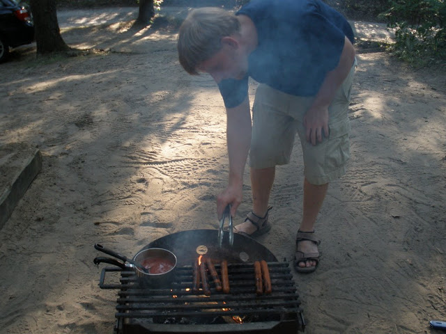
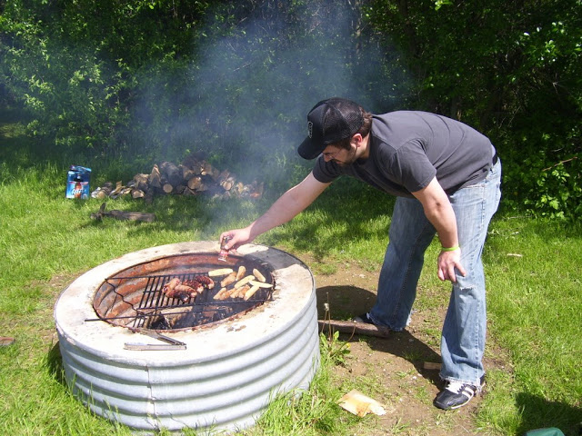
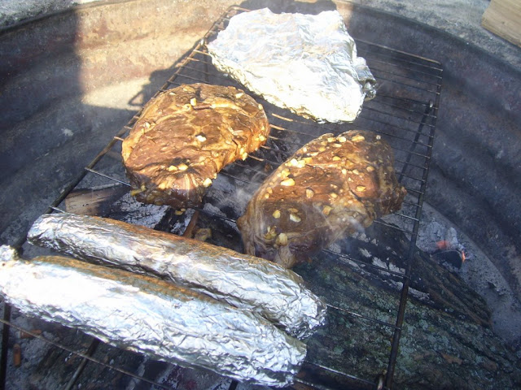

What's for Dinner?
One of my favorite things to do while camping is cooking a meal. I enjoy getting the firewood, building the fire. Then, after the flame has died down, placing my grill grate over the hot coals and cooking a fine meal. Some people may be intimidated by the idea of cooking while out in the woods. Have no fear! With a little prep work at home ahead of time you can be a master chef of the woods. The first thing to remember is keep it simple. On a normal three day and two night trip I plan on doing one big dinner and one big breakfast. The rest of my meals I try to keep as simple as possible. This saves you from a lot of cleaning, and extra materials that you have to bring with you. Plus as the meal gets more complicated more things can go wrong.
One piece of major advice. Before you leave stock your cooler with ice. When you get to camp check your ice levels. Keep a thermometer in your cooler to make sure your food stays at temp. I cannot stress this enough. I am obsessive about ice levels. When you get to camp find the nearest location that you can replenish ice levels as needed. Also keep your cooler in the shade and out of the sun. There is nothing worse than being hungry on your trip because your food supply spoiled because of lack of ice. Listed below are some advice and ideas for meals for your camping trip. At the bottom of the page is the recipe for my favorite dinner item to make while I am out camping.
Breakfast - It is the most important meal of the day, and it is true out in the woods. It is important to have energy for all of your days activities. My big breakfast is usually eggs and bacon or sausage. I love cooking bacon over an open flame. Watch out though, your fire can get away from you because of the dripping grease. A simple breakfast would be something like fruit, and a cereal bar. I also really like the instant pancake mix. Just add water, shake, and cook over a hot pan.
Lunch - Simple easy and satisfying sandwiches rule for lunch. When camping in the summertime it can be really hot and humid in Michigan. Having to make a meal that requires a fire or cooking over propane stove is uncomfortable. I like to add my dressing (i.e. mustard, mayo) at lunch, and not before. Doing it before can make your sandwich soggy. I also am a fan of grilled cheese, or pizza pockets if you are in the mood for something warm.
Dinner – Hot Dogs! Simple and quick to cook with very little prep. I prefer the hot dog packs that are in ziplock packaging. Keeps the dogs fresh, and prevents any ice water from getting into the hot dog pack. Occasionally I like to splurge and get brats. Sauté up some onions along with some potatoes that I cut into slivers to make steak fries on the grill. Canned food like Dinte More Stew and Bush’s Baked Beans are great sides and are easy to make.
A finally note. You are out in the woods. You are sharing the outdoors with wild animals. Make sure to canvas your area after every meal. Clean up any fallen food scraps or trash. Secure all your food and lock it away. Critters are smart and they will go through your campsite to find food.
My Favorite Camping Meal
|  | Qty | Ingredients |
|---|---|---|
| 2 | 12 oz. steak | |
| 2 | Ears of sweet corn | |
| 2 cups | Mushrooms chopped | |
| 1 | Onion sliced |
|
| 2 slices | Butter | |
| 2 | Cloves of garlic | |
| 5 oz. | Olive Oil | |
| Salt and pepper the steaks. Place in a ziplock bag with olive oil and garlic. I usually do this before my trip. Slice the onions and mushrooms into quarters. Wrap in aluminum foil. Before closing up, drizzle a little olive oil onto the mushroom and onion mixture. Finally place a pad of butter on each of the pieces of corn, salt, and pepper, and also wrap in aluminum foil. Place corn and your mushroom and onion mixture on the grill. Turning occasionally. After about 8-10 minutes add your steaks to the grill, and cook to desired doneness. | ||